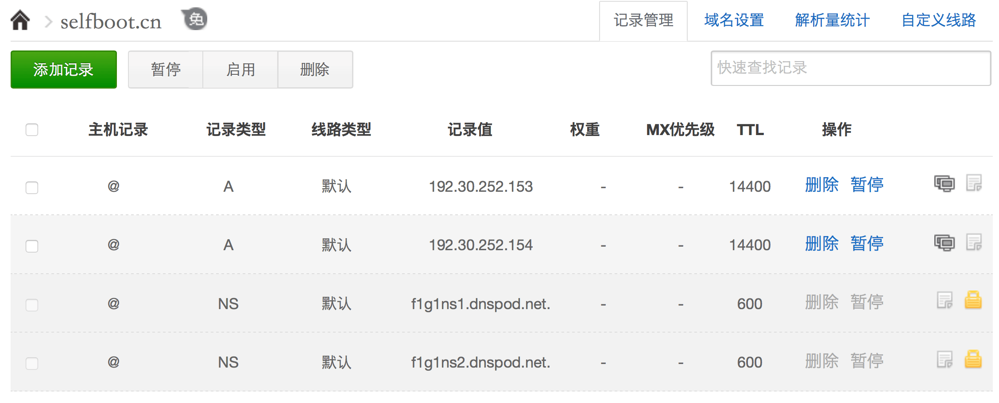
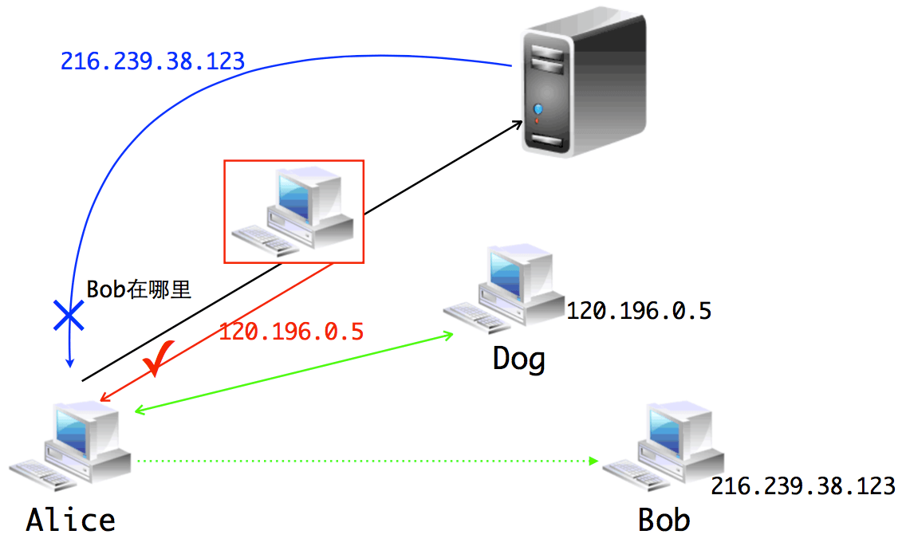

作者：selfboot
链接：http://selfboot.cn/2015/11/05/dns_theory/
在理论篇我们基本了解了DNS的整个协议原理，但是可能还会有着下面的疑问：
- 为什么我想申请的域名都没了？
- DNS 域名还要备案，这是为什么啊？
- 如何将刚申请的域名绑定到自己的网站呢？
- 怎么才能看到那些在背后默默给我解析的域名服务器呢？
- 他们说用一个什么文件就可以访问好多好多不存在的网站，是真的吗？
- 可信任的域名服务器是怎么一回事，难道有些域名服务器会做坏事？
- 怎么知道我现在用的域名服务器有没有使坏呢？
- ……
域名注册、绑定
首先明确一点，每个人都可以去注册域名。大多数时候我们希望去注册一个顶级域名（比如selfboot.cn, google.com等），那些二级域名毕竟不够好记（比如github托管博客的域名：username.github.io）。有的顶级域名（比如.tk域名）提供免费的一年域名试用，不过绝大多时候还是要为自己的域名付费的（一般是按年付费，也不是很贵）。要想去注册域名，首先得找到域名注册商，国内的比较著名的有DNSpod等，国外的有godaddy等。相信注册过域名的人都知道绝大多数我们能想到的自己喜欢的域名都已名花有主了，只剩那些不是那么惹人关注的域名供我们选择。所以，注册域名时，发现自己每想到一个域名都显示被人注册后，那太正常不过了，说明你的品味比较正常。
这里一点个人建议，选中一个域名后不要轻易去改了，因为换域名成本挺高的（我猜现在就算给淘宝一千万，它也不会换另成一个域名吧）。所以，最好不要去用免费的域名，因为指不定啥时候就不让你用了。你应该相信这么一个观点：天下没有免费的午餐。拓展一下就是，掏钱买服务，心里踏实。
接下来你可能会希望将自己的站点或者博客挂在自己选中的域名下，这其实很简单，只需要找到一个提供域名解析的服务商，然后填写相应的域名解析记录。大多时候，你注册域名的服务商都会免费提供域名解析服务。
现实中，大部分人可能会拥有个人博客，以前我们都是依赖一个博客平台（如CSDN），或者是买一台VPS托管自己的博客。不过自从Github推出了Blog服务，好多程序员都转而将博客托管在上面。Github Blog支持绑定个人域名，并提供了详细的绑定文档：Adding a CNAME file to your repository。假设你的博客已经可以通过 username.github.io 访问，接下来只需要用 CNAME 告诉Github你的博客绑定了哪个域名（比如说是selfboot.cn），然后在域名解析商那里添加解析记录即可，下图是我个人博客在DNSpod的解析记录：

现在当我们访问 selfboot.cn 时，DNSpod就会将请求解析到 Github 提供的 IP 地址上。之后 Github 上面的博客托管服务器在所有用户的 CNAME 记录中，找到本次请求的域名对应的博客项目地址，比如说是 xuelangZF.github.io，然后返回博客内容。
域名解析
我们都知道一个域名的解析过程中，可能会有多台域名服务器给我们帮助，那么我们怎么能看到这些背后的功臣呢？先介绍两个常用的关于DNS的命令。
dig, nslookup
dig (Domain Information Groper), 是 UNIX/BSD 系统自带的 DNS 诊断工具，使用十分灵活、方便。
查询 selfboot.cn 的A记录，并返回简短的结果：
$ dig selfboot.cn -t A +short
192.30.252.153
192.30.252.154用 dig 还可以查询某一 ip 对应的域名，如下：
$ dig -x 192.30.252.153 +short
pages.github.com.这里返回的是pages.github.com，因为当你访问博客地址 selfboot.cn 时，其实是Github的pages 服务器（域名是：pages.github.com）在后台返回该博客内容的（根据 CNAME 确定返回哪个博客）。
nslookup 也是一个 DNS 诊断工具，几乎所有平台都自带该工具，使用也很简答，可以用 man 查询手册。
解析路径查询
接下来用 dig 命令查看从根域名到指定域名中间可能经过的所有域名服务器，使用 +trace 选项即可。
dig selfboot.cn +trace @8.8.8.8
; <<>> DiG 9.8.3-P1 <<>> selfboot.cn +trace @8.8.8.8
;; global options: +cmd
. 474418 IN NS j.root-servers.net.
. 474418 IN NS g.root-servers.net.
......
. 474418 IN NS l.root-servers.net.
. 474418 IN NS m.root-servers.net.
;; Received 496 bytes from 8.8.8.8#53(8.8.8.8) in 12 ms
cn. 172800 IN NS a.dns.cn.
......
cn. 172800 IN NS e.dns.cn.
cn. 172800 IN NS ns.cernet.net.
;; Received 292 bytes from 2001:500:1::803f:235#53(2001:500:1::803f:235) in 382 ms
selfboot.cn. 86400 IN NS f1g1ns2.dnspod.net.
selfboot.cn. 86400 IN NS f1g1ns1.dnspod.net.
;; Received 83 bytes from 203.119.25.1#53(203.119.25.1) in 816 ms
selfboot.cn. 14400 IN A 192.30.252.153
selfboot.cn. 14400 IN A 192.30.252.154
selfboot.cn. 600 IN NS f1g1ns1.dnspod.net.
selfboot.cn. 600 IN NS f1g1ns2.dnspod.net.
;; Received 125 bytes from 115.236.137.40#53(115.236.137.40) in 31 ms可以看到最开始是13台顶级域名服务器的NS记录（中间省去一些记录减少行数，方便观察更清楚），接下来是顶级域名 cn. 的权威域名服务器（省略一些输出），然后是 selfboot.cn 的 NS 记录，即 DNSpod 的两条 NS 记录，最后从 f1g1ns2.dnspod.net 找到 selfboot.cn 的 A 记录。
seveas 提供了一个可视化的路径查询工具：dnsgraph，可以在线绘制跟域名到指定域名的所有可能路径。
当然，实际查询过程中，大多时候我们在本地缓存或者本地域名服务器缓存就能直接找到需要的域名记录，不需要每次都向根域名服务器发起请求，然后重复迭代或者递归查询过程。
DNS 缺陷
域名系统设计的很理想很美好，然而仍有一些小的瑕疵，可能会给我们带来些许困扰。
域名抢注
首先，有些域名对注册人没有限制，而另外一些域名则对谁可以得到一个域名空间中的名字有限制。比如pro域名是分配给合适的专业人员，但问题是谁才是专业的呢？显然医生、工程师是专业人员，但理发师、管道工呢？
此外，域名也可以被倒卖。黄牛们会批量注册大量域名（据说com域名下几乎每一个普通词都被人尝试注册了域名），然后转身就以高价转卖给那些对该域名感兴趣的人，这就是所谓的域名抢注。所以，现在你想注册一个符合自己网站特点的域名是很难的。
这个问题其实还不算严重，更要命的是下面两个问题。
DNS 劫持
我们知道一个域名服务器对其区域内的用户解析请求负责，但是并没有一个机制去监督它有没有真地负责。也就是说域名服务器的权力并没有被关在笼子里，所以它既可以认真地“为人民服务”，也可以指鹿为马。于是有些流氓的域名服务器故意更改一些域名的解析结果，将用户引向一个错误的目标地址。这就叫作 DNS 劫持，主要用来阻止用户访问某些特定的网站，或者是将用户引导到广告页面。
下面验证下我所用的域名服务器有没有干这种坏事，只需要一条简单的命令即可：
➜ ~ nslookup google.com
Server: 10.8.4.4
Address: 10.8.4.4#53
Non-authoritative answer:
Name: google.com
Address: 120.196.0.5我的DNS服务器地址为10.8.4.4，他告诉我google.com的地址是120.196.0.5，我才不信呢。于是用whois 120.196.0.5一看，果真不是Google的地址。针对DNS劫持，我们可以简单地更换域名服务器，比较靠谱的一个是Google提供的8.8.8.8。下面用 8.8.8.8 来解析一下 www.google.com 就能看到正确的地址了。
$ nslookup www.google.com 8.8.8.8
Server: 8.8.8.8
Address: 8.8.8.8#53
Non-authoritative answer:
Name: www.google.com
Address: 216.58.221.68DNS 欺骗
DNS 劫持通过简单的切换域名服务器就可以绕过，不过一旦你遇上了 DNS 欺骗，就无法简单地绕过了。下面我们用不同的域名服务器来查看 fb 的 IP 地址，结果都返回了同一个地址，看起来好像是真的一样，不过也仅仅是看起来而已。
$ nslookup facebook.com
Server: 10.8.4.4
Address: 10.8.4.4#53
Non-authoritative answer:
Name: facebook.com
Address: 159.106.121.75
$ nslookup facebook.com 8.8.8.8
Server: 8.8.8.8
Address: 8.8.8.8#53
Non-authoritative answer:
Name: facebook.com
Address: 159.106.121.75这个地址并不是 fb 的服务器地址（可以在 ViewDNS 查询所有域名真实的域名资源记录，ViewDNS是个很好玩的网站，里面有许多有意思的工具）。其实我Google了一下这个地址，竟然发现了一篇不错的译文，看来这个地址早在 2011 年就有了特殊的含义（英文原文是相关阅读第一个）。
DNS 欺骗简单来说就是用一个假的 DNS 应答来欺骗用户计算机，让其相信这个假的地址，并且抛弃真正的 DNS 应答。在一台主机发出 DNS 请求后，它就开始等待应答，如果此时有一个看起来正确（拥有和DNS请求一样的序列号）的应答包，它就会信以为真，并且丢弃稍晚一点到达的应答。

实施 DNS 欺骗的关键在于伪造一个有特定序列号的应答包，并且让其抢先一步到达发起请求的主机。这对于个人来说还有点难度，但是对于拥有骨干网节点的组织来说，实在是易如反掌，所以这么多网站都已沦陷。不过使用网上流传的那些 hosts文件，就可以在本机缓存许多网站的ip地址，进而可以和部分网站通信。但是通过hosts文件并不能完全 Cross the Great FireWall，因为人家还有很多其他手段。